LambdaFogSim Infrastructure Visualization Report
Infrastructure Network
This visualization shows the complete infrastructure topology with cloud, fog, and edge nodes and their connections.

Security Levels
Distribution of security capabilities across the infrastructure.

Software Capabilities
Distribution of software capabilities across the infrastructure.
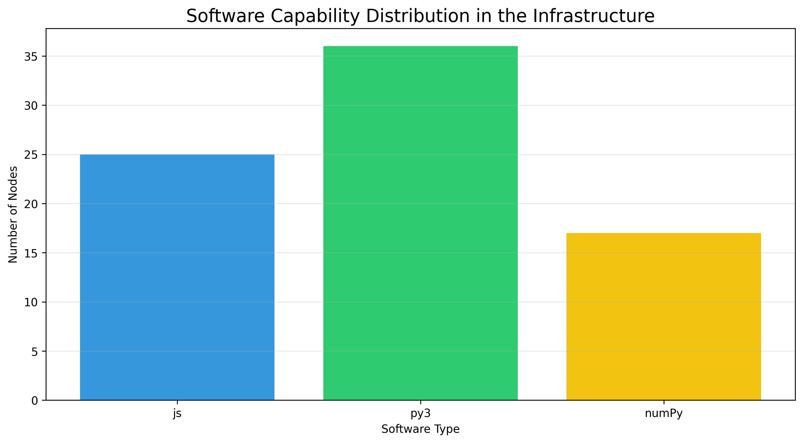
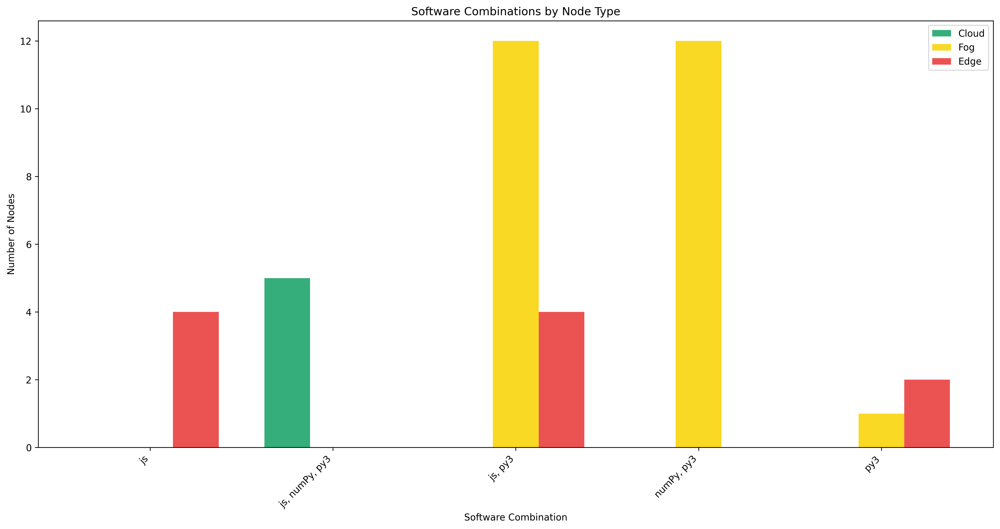
Services Distribution
Distribution of services across the infrastructure.
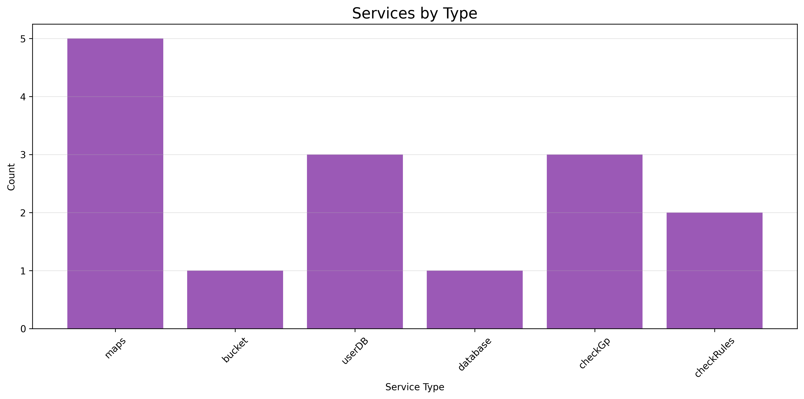
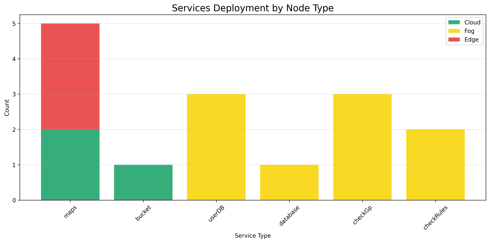
Application Workflows
Visualization of application workflows.
Media Processing
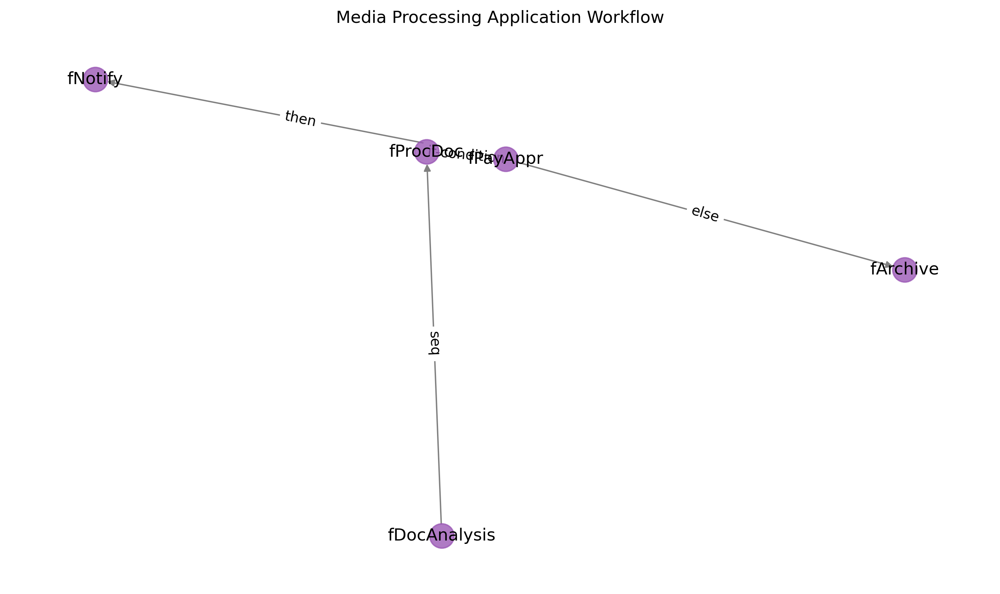
Siotec2022
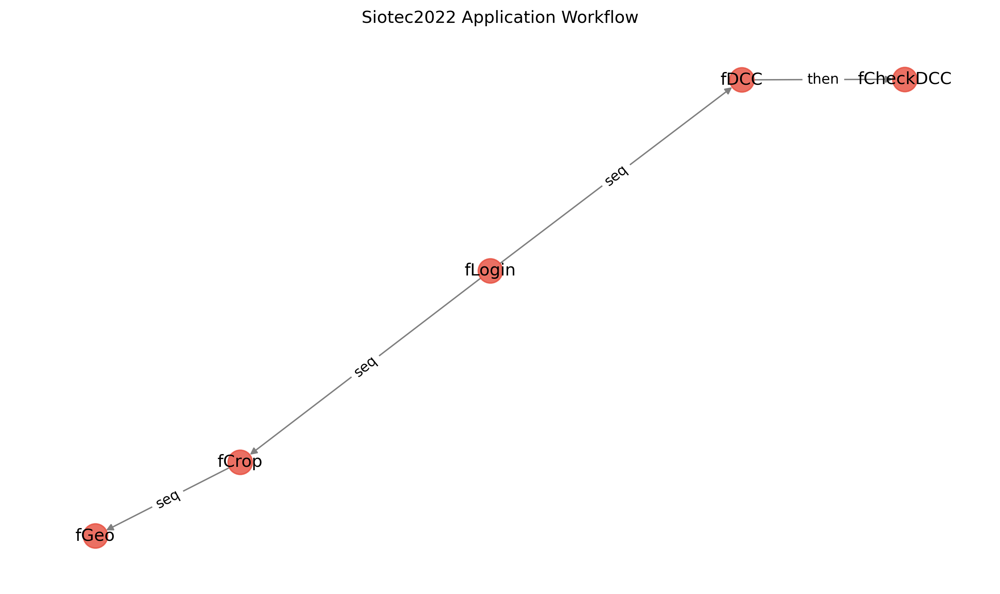
Stock Market
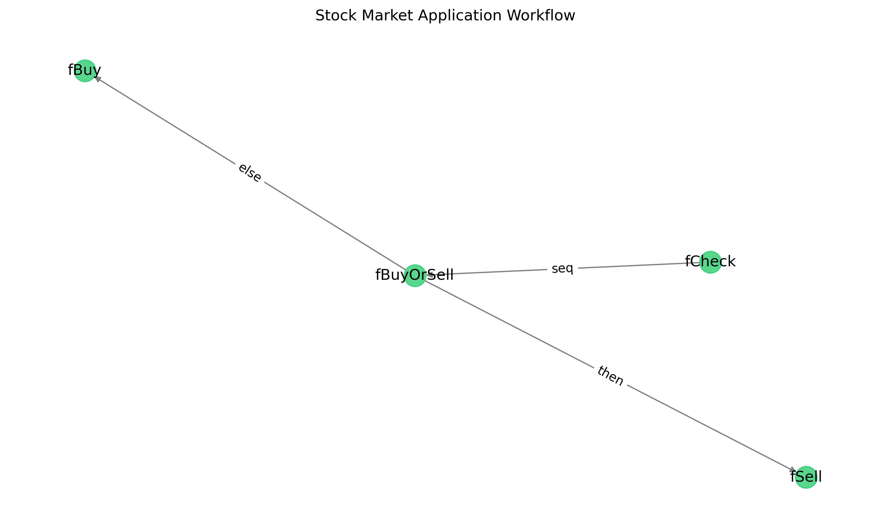
Node Statistics
Node load statistics over time.
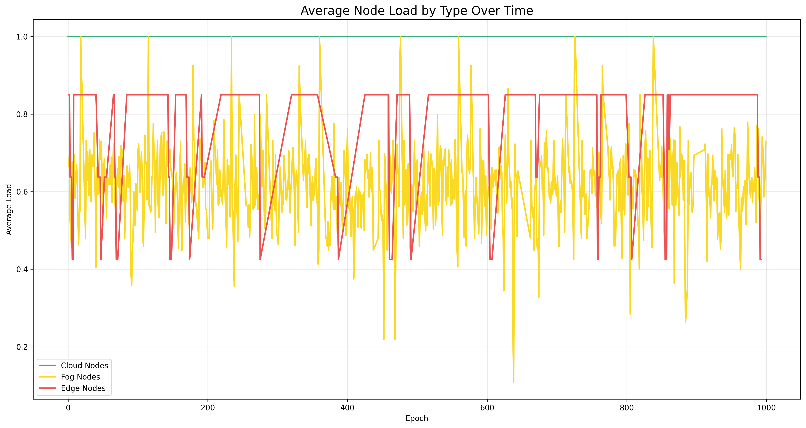
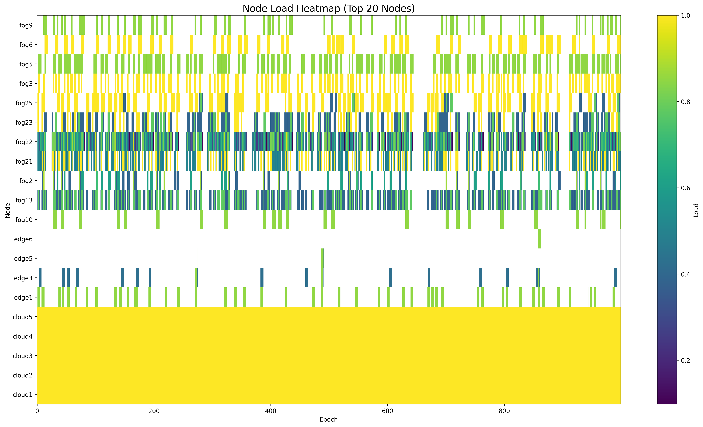
Infrastructure Events
Node and link failures and resurrections.
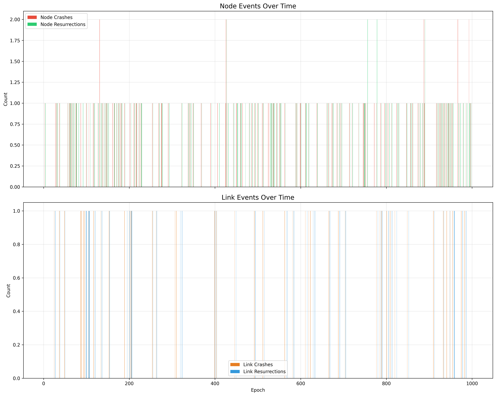
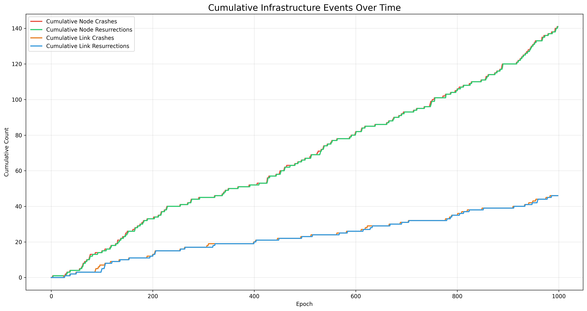